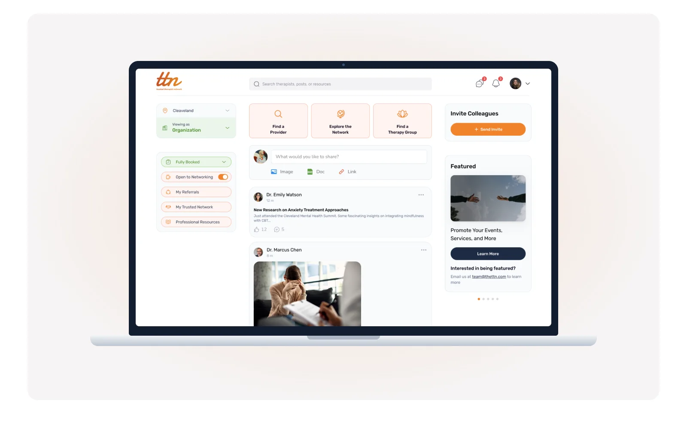
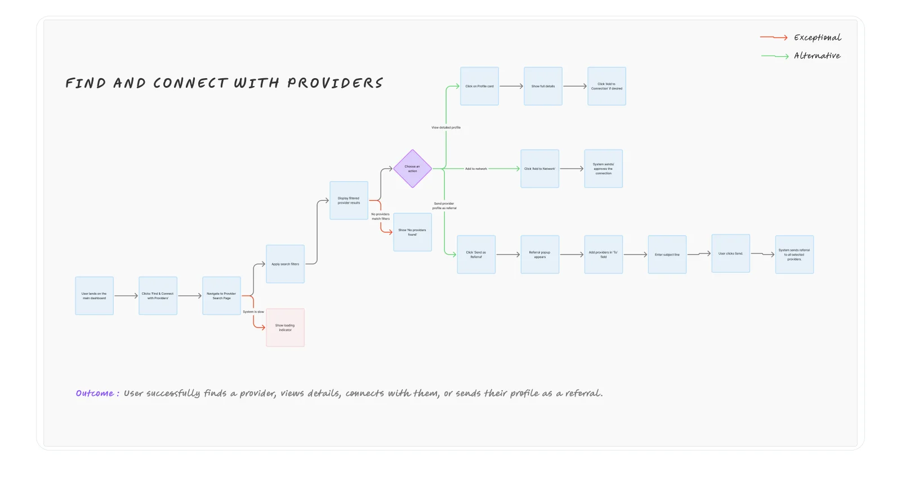
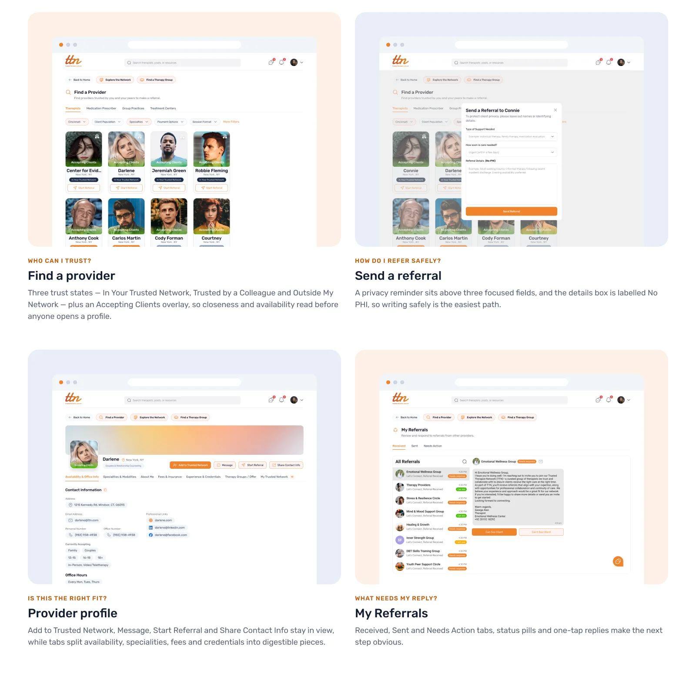
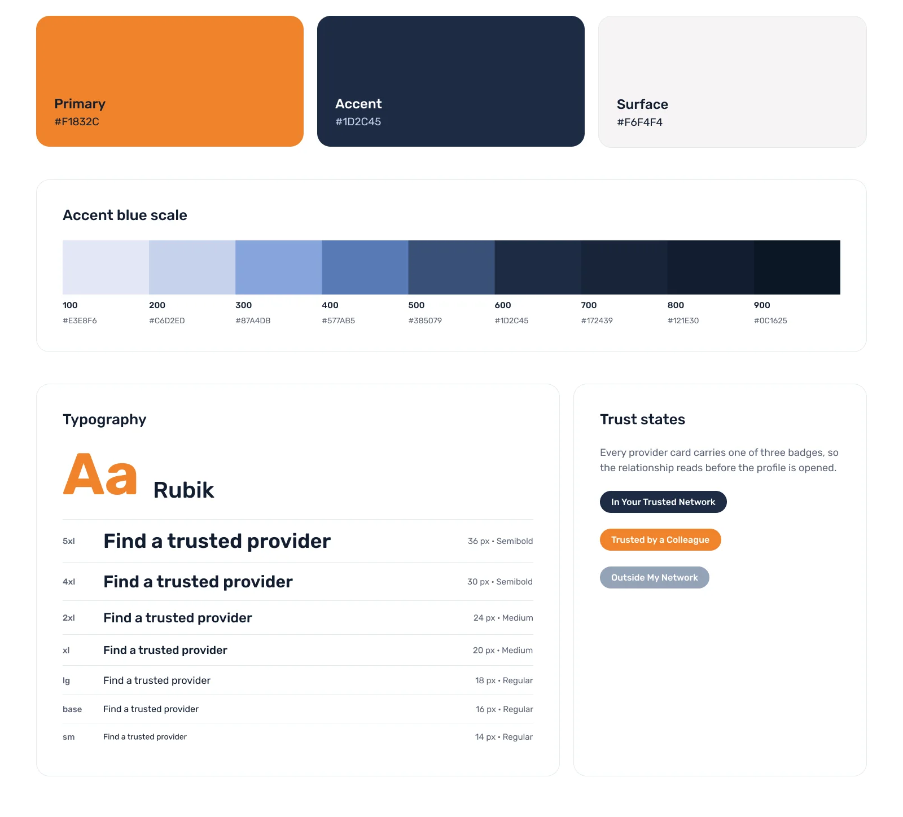
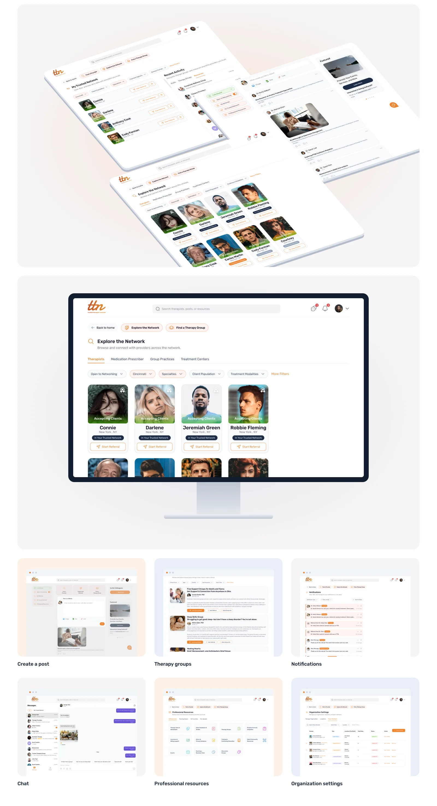

Trusted Therapist Network
A referral-first professional network where therapists connect with the providers they and their peers already trust.
- Role
- Senior Product Designer
- Timeline
- 3–6 months
- Platform
- Web app (desktop)
- Deliverables
- User flows, platform UI, design system

The product
Trusted Therapist Network is a professional network for mental health providers. Rather than searching a generic listing, therapists refer clients to people they, and their colleagues, already trust.
Therapists were struggling to find a provider they could confidently refer a client to.
Referrals lived in scattered emails, texts and word of mouth, and a directory listing could not show whether a colleague already trusted someone.
A network built on trust, not a directory.
Trust badges on every provider card, a short referral form that keeps client details out, tabbed provider profiles, and a referral inbox organised by status.
Referring a client is a trust decision
Handing a client to another provider is high-stakes, and the tools therapists had did not reflect that.
Referrals live in scattered channels
Finding someone who is accepting clients, fits the need and is vouched for by a peer usually means emails, texts and word of mouth.
Trust is hard to see
A listing doesn’t say whether a colleague has worked with someone. Trust signals needed to be visible at a glance.
Privacy can’t be an afterthought
Referral messages must never contain client names or identifying details, so the interface has to guide therapists toward safe, PHI-free hand-offs.
Find and connect with providers
Flows were mapped for the core jobs: finding and connecting with providers, sending referrals to one or several providers, inviting trusted colleagues, joining speciality groups and creating posts.

From early concepts to approved designs
Explore
Moodboards, early concepts and user flows mapped how therapists search, refer and build their network before any high-fidelity work began.
Iterate
The platform design moved through 14 dated iterations, with review rounds and in-file comments shaping navigation, filters and profile structure.
Approve and hand off
Final screens were reviewed, approved and moved into an “Approved & Ready for Build” page for engineering.
Four screens carry the work
Each screen answers one question for a therapist making a referral.

Warm, calm and clear
A warm orange anchors actions and status, a deep navy carries trust, and soft neutrals keep dense information readable. One typeface, Rubik, is used at every size.

The approved interface

Designed for build
The project took Trusted Therapist Network from early concepts to a complete, approved set of build-ready designs across discovery, referrals, profiles, the trusted network and account settings, giving therapists a faster, safer way to refer clients to people they trust.
One pattern, many places
Provider cards, filters and status badges repeat across Find, Explore and Trusted Network, so the product feels familiar everywhere.
Privacy by design
Reminders and a No PHI label sit exactly where therapists write, guiding safe behaviour without slowing them down.
Ready for engineering
After 14 dated iterations, the final screens live in a dedicated approved page, built from shared components, icons and a consistent colour and type system.